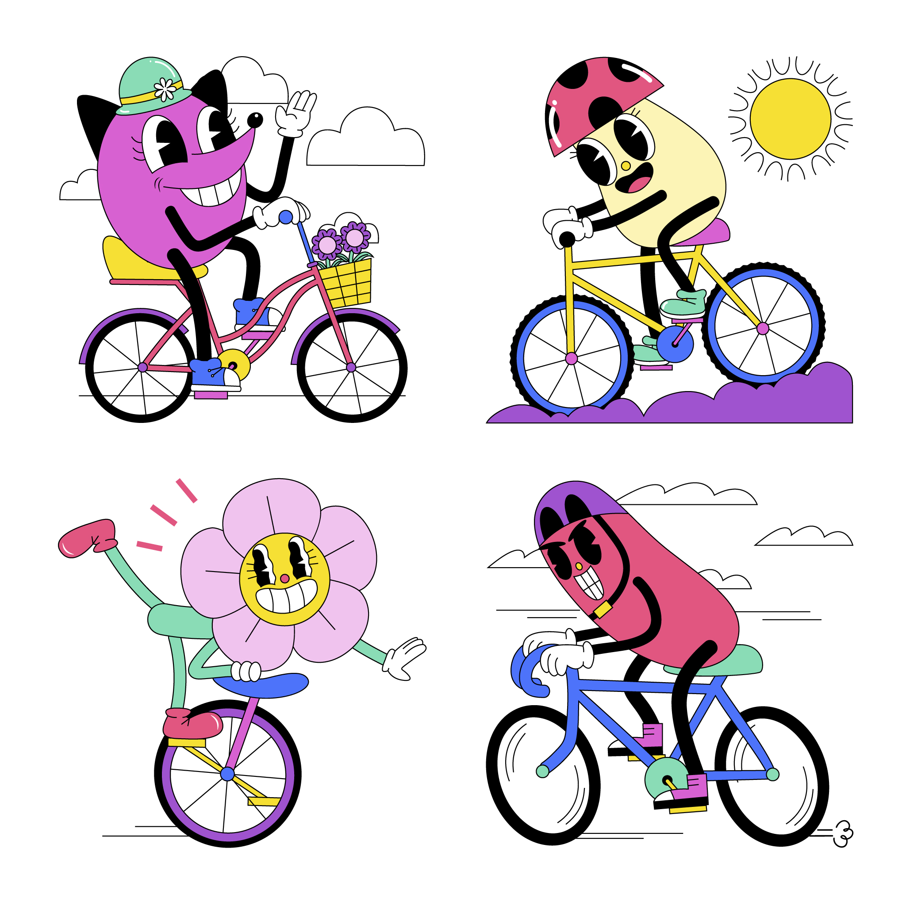

The project was created to provide the executive team a snapshot of the company performance within a specific time period (in this case, their busiest season- summer) and uncover trends from a
complex Google Big Query dataset that consists of almost 82 million rows of data. For this project, I've used SQL & Tableau to analyze the effects of COVID19 (during & after) on the Bike company's most popular trip origins during their busiest season i.e., summer.


Using Excel & Tableau, this project analyzes the results of a A/B test run on 3 cohort groups. The main objective of this analysis was to identify the differences in incremental sales, return on advertising spend, order value and transaction volume , if any between the exposed and treatment groups for each cohort and give recommendations on how each could be improved to meet the client's goals.

Using Python, this project displays the work my team and I completed in fulfillment of our DS4A Fellowship. For our capstone project, we chose to delve deeper into Food insecurity particularly as it applies to underprivileged minorities living in food deserts.

Created an interactive dashboard to explore the revenue, profit & sales of this business operations of Simply Music stores. This dashboard not only shows the overall sales and revenue earned over time through the lifecycle of the company but also breaksdown the sales and profit by regions that the company operates. For a deeper analysis, the products charts compares the products sold with the units and revenue aand that gives a detailed view on the best and worst performing products. Finally, in the last tab, I created a map that showcases the regions with the most and least purchases so our stakeholders would know where the company is already doing well at and where to improve upon

Tableau Dashboards for projects on A/B Market Test, Ridership Growth for London Bikes Company & Financial Analysis.